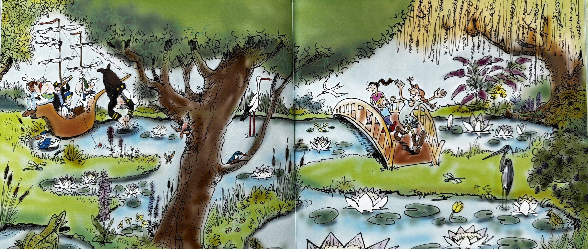
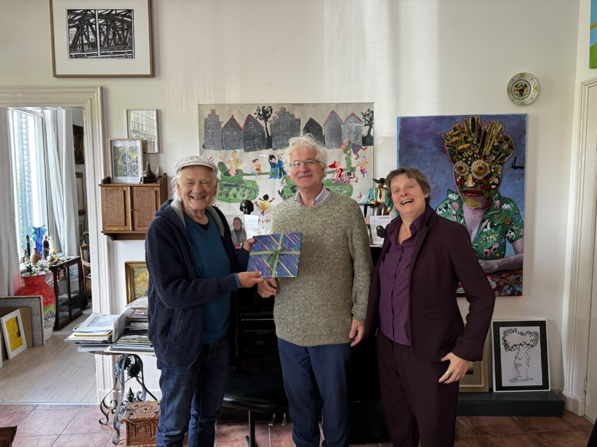
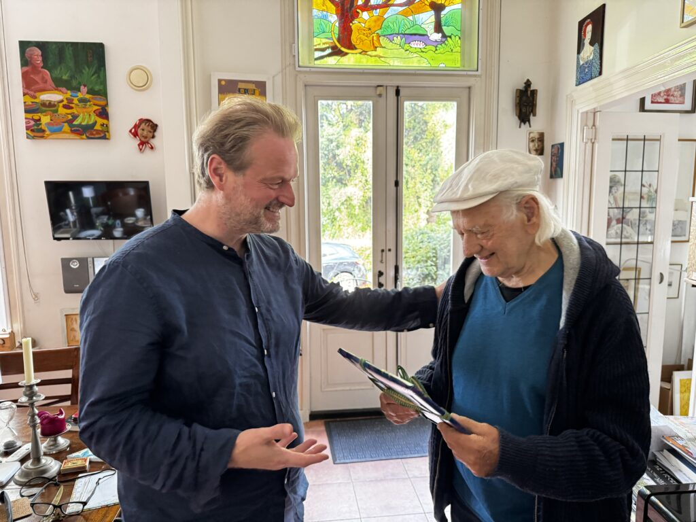

Fabeltjesboot (uitgeverij de Vergulde Snuitbeer)
En toen kwam Fries, de zoon van mijn zoon Rogier en zijn nieuwe vrouw Martine. En met zijn volledige naam kun je zeeën bevaren. Fries Anton Jaap Gerritsma-Valk.

En omdat ik voor elk kleinkind een sprookje heb geschreven moest er natuurlijk voor hem ook een avontuur te beleven zijn. In dit nieuwe verhaal “Fabeltjesboot” speelt hij de hoofdrol samen met zijn halfzusje Josephine.

“Wat ziet het er prachtig uit! Geweldig!
Je zult maar zo’n Opa hebben die dit schrijft. Leuk verhaal, niet overdreven met wijsheden, maar wel aanwezig. Het boek ziet er verder prachtig uit. Wat een welkomstcadeau voor je kleinkind." – Marga van Poecke
“Ik heb met plezier vanmiddag jouw prachtig geïllustreerde boekje gelezen. Grappig hoe je oude en nieuwe stripboekfiguren in het verhaal hebt verwerkt. Jouw kennis van planten en bomen blijkt ook maar weer eens!
De tekeningen vind ik ook erg mooi, ze passen naadloos bij de beschrijvingen.
Zoals een opa betaamt, heb je het boekje volgestopt met wijze levenslessen. Ik hoop dat Fries er later evenveel plezier aan zal beleven, wat zeker zal gebeuren als zijn vader hier en daar wat uitleg geeft." – Remi Verduin
“Wat een schattig boekje! En: het is zo leuk als een schrijver zich zo in in de gevoeligheden,het hart en hoofd van een kind heeft genesteld. En dat samen met die mooie tekeningen die zo treffend zijn. Wat zullen de hoofdrolspelers Fries en Josephine hier blij mee zijn. Fries zal mogelijk een beetje moeten groeien om dit allemaal te beseffen. De uitgave is werkelijk prachtig." – Annemieke Oosterbaan


De uitgever van Vergulde Snuitbeer Paul de Jager en de illustratrice van de blinde Gerrie Hondius over handigen het eerste exemplaar aan de auteur. Op zijn beurt overhandigt de schrijver het aan Rogier de vader van Fries.
Het is weer een heel verrassend sprookje van jouw hand en hart, mag ik wel zeggen.
Wat een lief en mooi vormgegeven boekje voor je kleinkind Fries.
Het is zo verrassend dat alle bekende stripfiguren van mijn jeugd voorbijkomen en hun rol van vroeger tijden met verve vervullen: Obelix, die de Fabeltjesboot makkelijk kon optillen, Pippi Langkous, kapitein Haddock, Ketelbinkie en anderen dartelden zo leuk voorbij in dit verhaal.
En wie wil er eigenlijk niet ronddwalen in de tuin der wijsheid? En welke grootouder wil z’n kleinkind niet wat levenswijsheid meegeven?
Die wijsheden zitten heel mooi verpakt in het verhaal. En ondertussen komen de bloemen, planten en bomen voorbij: het gele penningkruid, de kalmoesplant, de waterlelie. En de oude linde vindt het maar wat fijn om met z’n 600 jaar wat met de kinderen te babbelen.
Ook het plaatsje Abcoude waar het kleinkind geboren is wordt mooi weergegeven.
En de vrolijke, humoristische illustraties maken het boekje helemaal af.
Ik vind het echt zo’n boekje voor kleine en grote kinderen van 0-100 jaar.—Gerry Versteeg